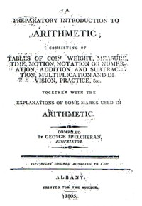

by
Stefan Bielinski
A George Mc Elcheran was born about 1763.
In 1788, George Mc Elcheran began advertizing imported goods for sale at his store in Bennington, Vermont. In 1790, George Mc Elcheran's household consisting of two men and a woman was included on the federal census for the town of Bennington. Later that year, his name appeared on a Bennington freeman's list.
In March 1787, the Albany Gazette reported that he ran a school in Albany known as the Washington Academy and that it was located at "Northgate."
In 1789, George Mc Elcheran married Catherine Burgiss at Albany's St. Peter's church. During that time, at least two children were baptized in Albany area churches. In 1793, St. Peter's rector Thomas Ellison testified to "Mc Elicheron's" character and conduct while stating that he had left Albany.
By 1799, George Mc Elcheran was back in Albany and the owner of a modest house and lot on Barrack Street in the second ward. In 1800, his second ward household including four children was enumerated on the Albany census. In 1801, he paid twelve dollars for a license to run a tavern. He owned another small lot on Lion Street. By 1813, he had sold both these properties.
The 1820 directory for the city of Albany, listed George Mc Elcheran as a merchant at 10 Washington Avenue.
Among other things, George Mc Elcheran was an educator. In 1805, an Albany printer issued his Preparatory Introduction to Arithmetic - a dictionary and directory of mathmatical terms. A decade later, he was associated with the newly opened Albany Academy. City directories for 1821 and '22 identify him as the "principal col" of the Academy located at 10 Washington Avenue.
George Mc Elcheran died in December 1831 at age sixty-eight. The Albany death notice called him a schoolteacher.
At this point, we are not at all certain that all of the abovementioned information pertains to a single individual!

notes
 Sources: The life of George Mc Elcheran/Elicheron/Chelcheran (the schoolteacher) is CAP biography number 2110. This profile is
derived chiefly from family and community-based
resources. we seek defining information on his origins and background.
We are indebted to Tim McElcheran
of Toronto, Ontario for sharing substantial information on his ancestor's
life.
Sources: The life of George Mc Elcheran/Elicheron/Chelcheran (the schoolteacher) is CAP biography number 2110. This profile is
derived chiefly from family and community-based
resources. we seek defining information on his origins and background.
We are indebted to Tim McElcheran
of Toronto, Ontario for sharing substantial information on his ancestor's
life.
Fascimilie of the title page courtesy of the Mc Elcheran family.
first posted: 2/10/03